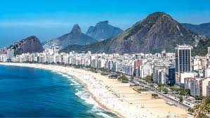
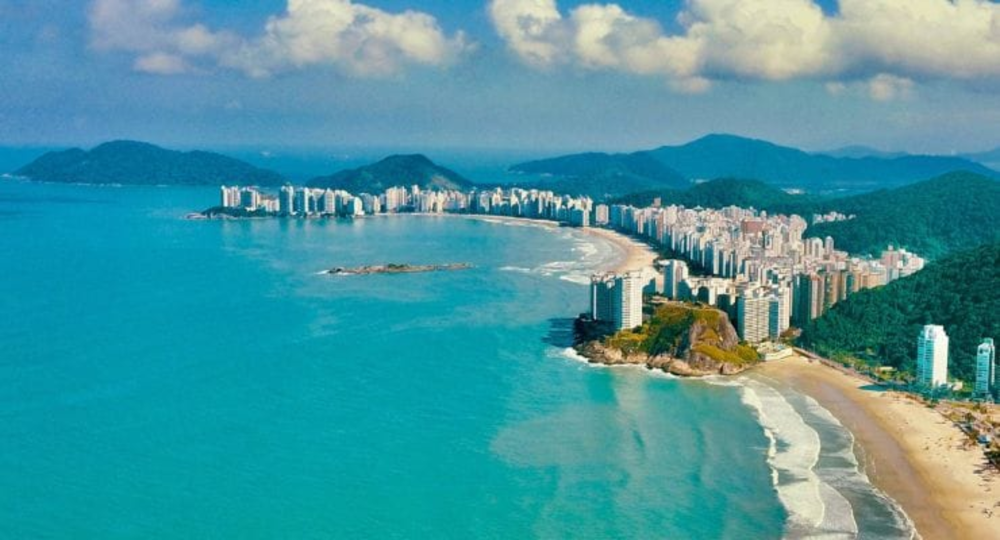
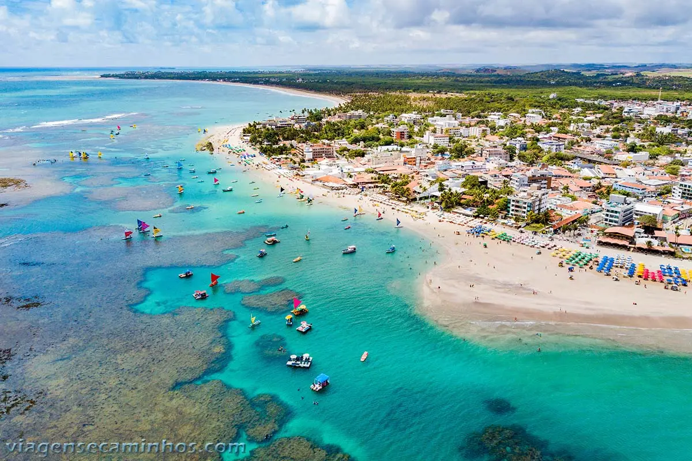

De praias paradisíacas à litorais exuberantes, dos sertões do Nordeste às geleiras do Sul — o Brasil tem uma experiência única esperando por você.
Principais Dentinos

Rio de Janeiro
📍Copacabana
Praia mais famosa do mundo, com 4 km de areia branca e calçadão com ondas de pedra portuguesa. O visitante encontra quiosques, feirinhas de artesanato, o Forte de Copacabana e o Hotel Copacabana Palace. Ideal para caminhada, esportes e pôr do sol. O Rio de Janeiro em sua essência mais vibrante.
Saiba mais
São Paulo
📍Guaruja
Cidade badalada do litoral paulista, conhecida como "Pérola do Atlântico". Famoso pelas praias de Pitangueiras, Astúrias e Enseada, todas com boa infraestrutura. O bondinho aéreo que liga Guarujá a Santos é um dos grandes atrativos, junto com o Aquário Municipal e as vielas charmosas do centro.
Saiba mais
Ceara
📍Fortaleza
Capital cearense vibrante, com mais de 30 km de praias urbanas. Destaque para a Praia do Futuro, a Feirinha da Beira-Mar, o Mercado dos Peixes e a Estátua de Iracema. O porto do Mucuripe é ponto de partida para passeios de jangada. Noite animada com forró e gastronomia regional.
Saiba mais
Bahia
📍Porto Seguro
Berço do Brasil, onde aconteceu a primeira missa no país. O centro histórico, a Passarela do Álcool e as praias de Taperapuã e Coroa Vermelha são os grandes atrativos. Axé, reggae e diversão garantida. Roteiro de bate-volta para Arraial d'Ajuda e Trancoso. Um dos destinos mais completos do Nordeste.
Saiba mais
Pernambuco
📍Porto de Galinhas
Praia de águas cristalinas e piscinas naturais formadas por corais na maré baixa. Famosíssima pelas jangadas coloridas, mergulho com peixes e passeios a cavalo pela areia. O destino de sol e mar mais procurado de Pernambuco, com excelente rede hoteleira e gastronomia. Um verdadeiro paraíso.
Saiba mais
Santa Catarina
📍Balneario Camboriú
Cidade que mais cresce no sul do país, famosa pela Praia Central e arranha-céus à beira-mar. Destaque para o Cristo Luz, o Parque Unipraias com seus bondinhos e o imponente prédio Yachthouse, o mais alto do Brasil. Vida noturna agitada e infraestrutura completa para todos os gostos.
Saiba maisVeja o Brasil em movimento
Inspire-se com imagens impressionantes dos destinos mais incríveis do Brasil.